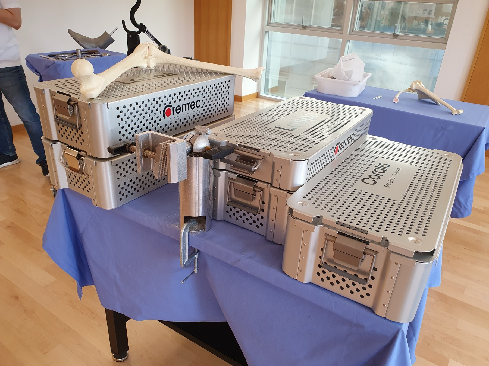
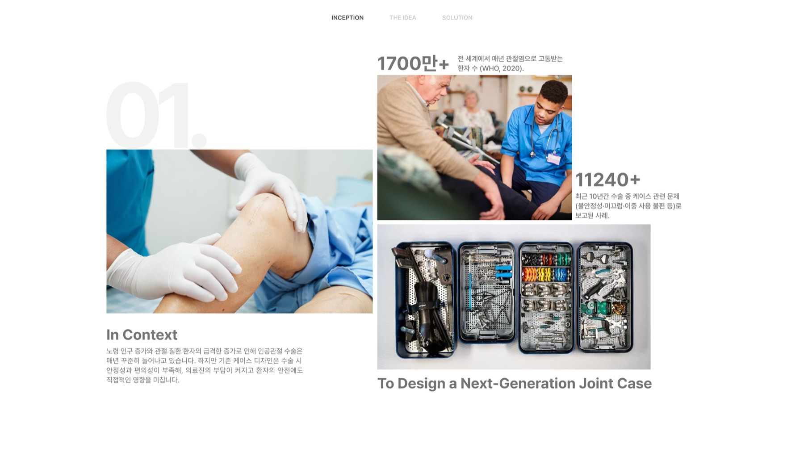
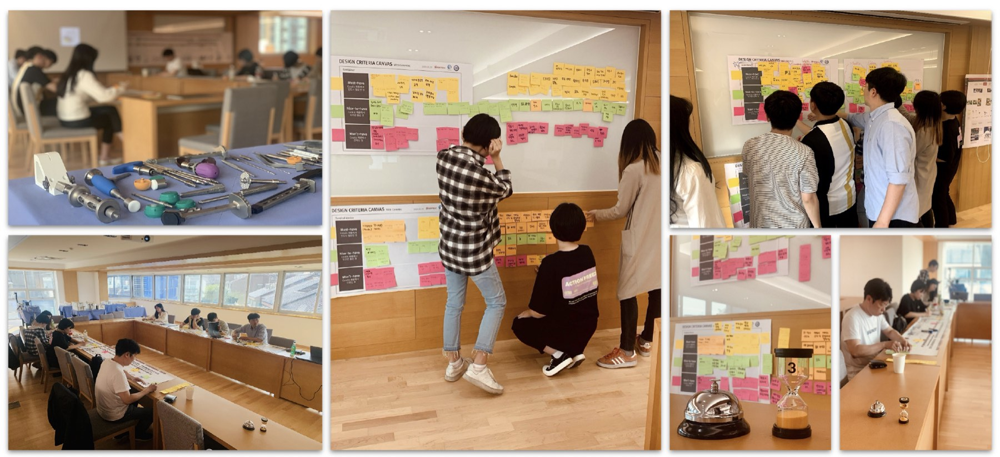
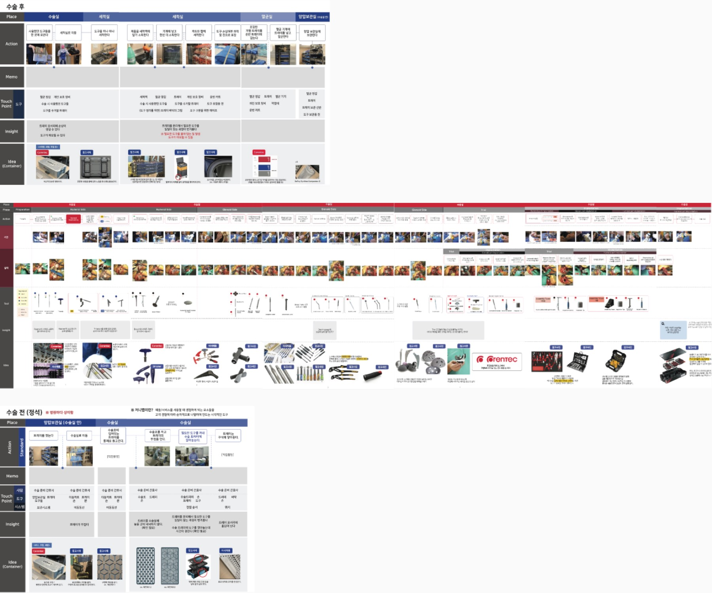
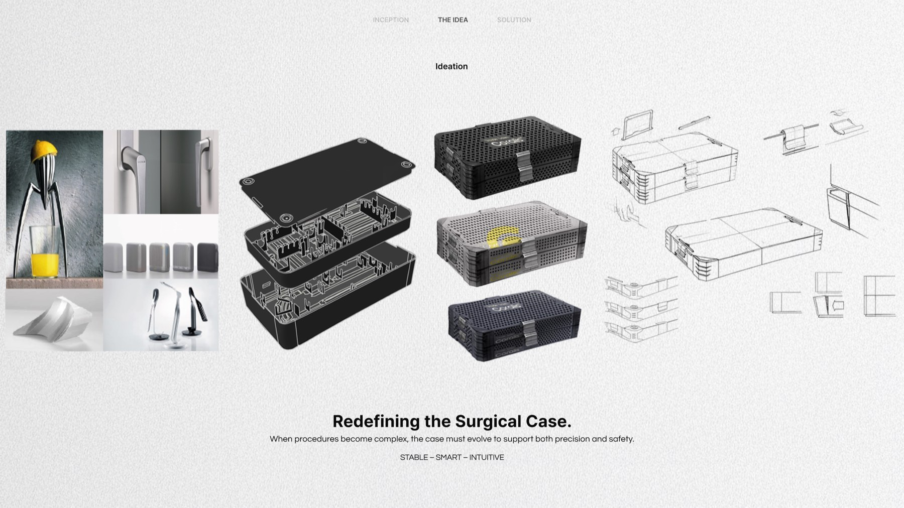
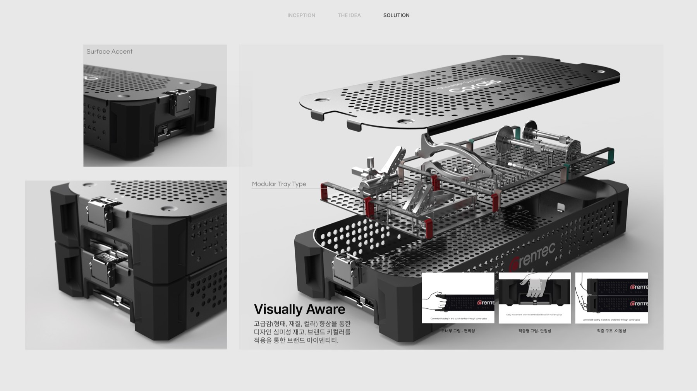
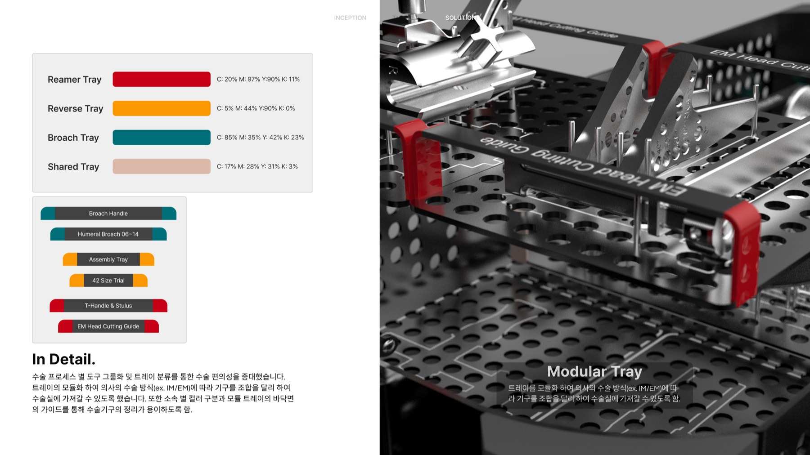
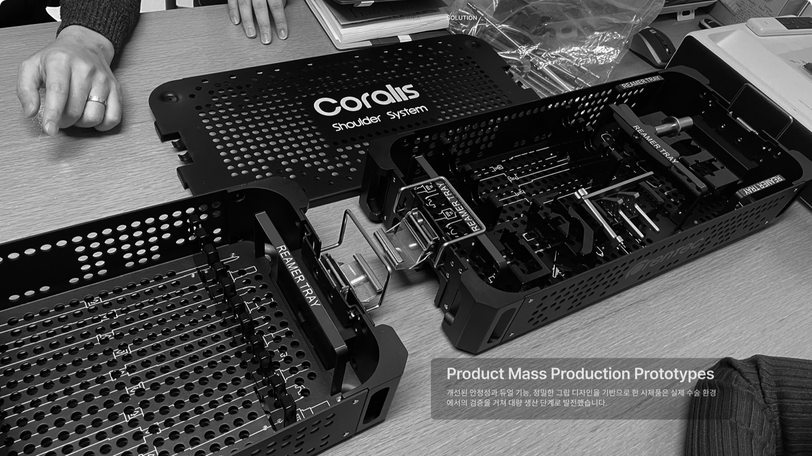

코렌텍의 인공관절 수술 케이스는 제 기능은 하고 있었지만, 딱 거기까지였다. 의료기기 박람회에 나가면 경쟁사 케이스들 사이에서 눈에 띄지 않는다는 게 담당자들의 공통된 아쉬움이었다.
기능은 있는데, 왜 이 케이스여야 하는지에 대한 답이 없었다.

케이스의 문제를 파악하려면 회의실이 아니라 수술실이 필요했다. 수술 전·중·후 과정을 직접 병원에서 관찰하며, 실제로 케이스가 어떻게 쓰이고 어디서 걸리는지를 기록했다.

수술 종류마다 필요한 기구 구성이 달랐지만, 케이스 내부 구조는 하나로 통일돼 있었다.
수술실에서 급하게 필요한 기구를 찾을 때, 한눈에 구분되는 시각적 단서가 부족했다.
병원에서 관찰하고 트래킹한 과정을 큰 종이에 펼쳐 한눈에 정리한 뒤, 실무자들과 디자인 씽킹 워크숍을 거쳐 꼭 필요한 기능과 그렇지 않은 기능을 걸러냈다.


현장 관찰 → 기능 정리 → 모듈 구조 설계 → 시각적 구분(컬러 태그) 순서로 진행하며, 각 단계의 결론이 다음 단계의 기준이 되도록 설계했다.



수술실을 직접 보지 않았다면, "케이스 내부를 수술 종류별로 나눈다"는 아이디어에 닿지 못했을 것이다. 실무자 인터뷰만으로는 놓쳤을 디테일들이 현장 관찰에서 드러났다.
디자인 씽킹은 방법론이 아니라, 관찰한 것을 실무자와 함께 걸러내는 실제 대화의 과정이라는 걸 이 프로젝트에서 체감했다.
수술 종류별로 나뉜 2층 모듈 구조와 컬러 태그는 실무자에게도, 심사위원에게도 명확하게 읽혔다. 기능 개선이 곧 눈에 보이는 차별점이 된 케이스였다.
